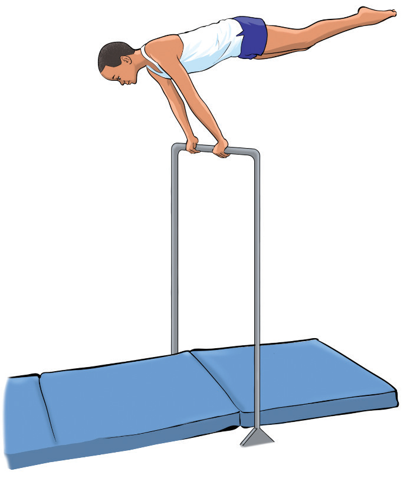

(vi)
As your legs rise, allow your hips to move slightly away from the bar;
(vii)
Keep your body tight and avoid arching your back while pushing down on the bar to extend your cast higher, figure 4.29;
(viii)
As your body reaches the highest point of the cast, control the descent by keeping your muscles engaged and land back in the front support position with control; and
(ix)
Repeat multiple times, gradually increasing the height of your cast.

Activity 4.27
Search from various sources to find the variations of executing casts and practice them.
Exercise 4.8
1.
Explain the advantages of performing a straddle cast over a standard cast, and in which routines this might be beneficial.
2.
What role do timing and body position play in executing a backward cast, and how can a gymnast improve this skill?
Hangs
In gymnastics, hangs refers to the position where a gymnast holds onto the bar or rings with their body suspended in the air. Hangs are fundamental for building muscles in